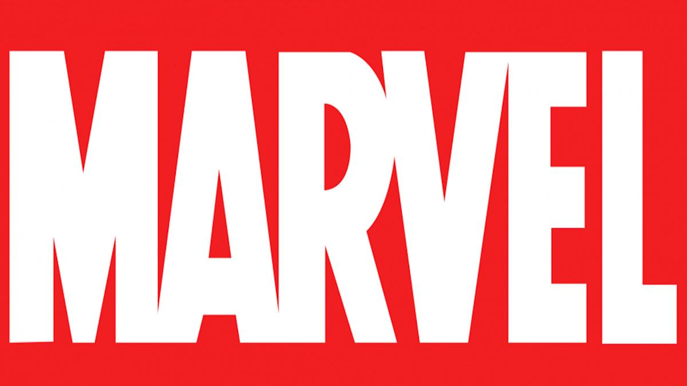

— американская компания, издающая комиксы, подразделение корпорации «Marvel Entertainment».
Получившая среди поклонников комиксов прозвище «Дом идей», «Marvel» наиболее известна такими сериями комиксов, как: «Фантастическая Четвёрка», «Люди Икс», «Мстители», «Стражи Галактики», «Защитники», «Человек-паук», «Росомаха», «Железный человек», «Капитан Америка», «Тор», «Халк», «Дэдпул», «Сорвиголова», «Каратель», «Доктор Стрэндж», «Черная Пантера», «Человек-муравей и Оса», «Капитан Марвел», «Веном», «Серебряный Сёрфер», «Призрачный гонщик», «Блэйд», «Черная вдова», «Хоукай», «Люк Кейдж», «Железный Кулак» и «Джессика Джонс».